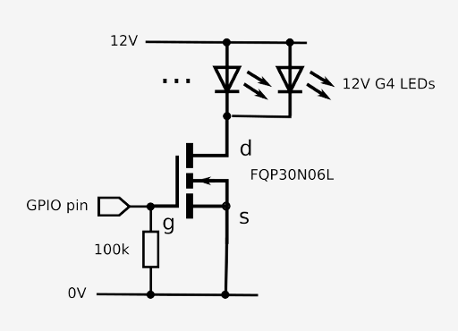
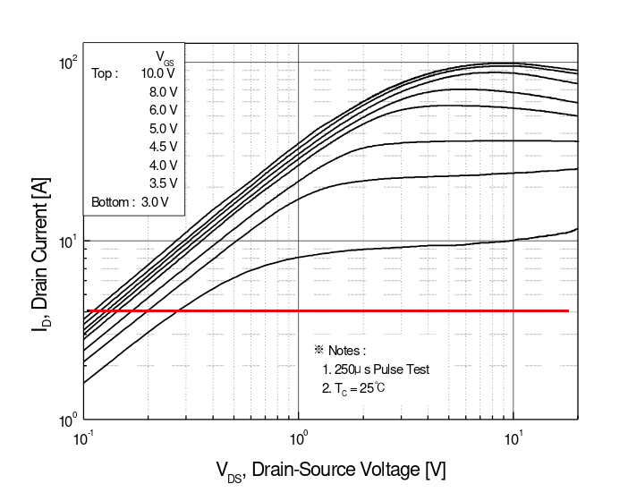

Why switching high currents using a MOSFET and a Raspberry Pi is not as straightforward as it looks
 It's become popular to think of a MOSFET transistor as a kind of
'electronic switch' -- apply a voltage greater than some threshold
to the gate terminal, and the drain-source circuit changes from being
an insulator to a conductor. The gate itself draws no appreciable
current -- not at DC anyway -- so it's possible to connect a
bunch of these devices to the GPIO pins of a Raspberry Pi, or
similar device, and use them to switch high currents, without
drawing any current from the Pi.
It's become popular to think of a MOSFET transistor as a kind of
'electronic switch' -- apply a voltage greater than some threshold
to the gate terminal, and the drain-source circuit changes from being
an insulator to a conductor. The gate itself draws no appreciable
current -- not at DC anyway -- so it's possible to connect a
bunch of these devices to the GPIO pins of a Raspberry Pi, or
similar device, and use them to switch high currents, without
drawing any current from the Pi.
However, the situation really isn't as simple as that. Using a single MOSFET transistor for power switching is simple and low-cost, but it often doesn't work as well as expected. Either the switched device doesn't run at full capacity, or the MOSFET gets hot. This article explains why.
A simple circuit
Here's a typical circuit. I want to use a Raspberry Pi, whose GPIO pins can handle a maximum of a few tens of milliamps, to switch a bunch of 12V LEDs, drawing a total of 4 amps. Clearly I can't connect these LEDs directly to the GPIO pins -- not without needing to replace the board soon after. The MOSFET I've chosen -- the Fairchild FQP 30N06L -- is a common part, which is rated for a drain current greater than 30A and a drain voltage over 60V. The gate threshold voltage is stated to be "1.0V-2.5V", which is smaller than the Pi's GPIO voltage of ~3.5V. This part certainly looks like it will do the trick.
But does the simple MOSFET circuit actually work?

Well, yes and no. It may work, depending on what you mean by 'work', and what the application is.
Gate threshold voltage explained
The two parameters that circuit designer typically look for in the manufacturer's data sheet -- those who look at all -- are the gate threshold voltage (VGS) and the 'on' resistance (RDS(on)). The gate threshold is usually taken to be the point at which the device 'switches on', and the 'on' resistance is the resistance between drain and source when it does. The data sheet for the FQP 30N06L cites two maximum RDS(on) values -- 45 milliohms with a gate voltage of 5V, and 35 milliohms with a gate voltage of 10V. The fact that there are two figures, and both the gate voltage figures are well above the gate threshold voltage (1-2.5V) should be a clue that things are not as straightforward as we might like.
It's worth bearing in mind that the MOSFET I've selected is advertised as being a 'logic' part -- it's designed to work with gate voltages comparable with digital circuits. However, 'logic' in this sense is a term that stems from the days when logic circuits invariably operated at 5V. The Pi, and most similar systems, have 3V-4V internal voltage rails, with GPIO pin voltages of the order 3.5V. So although 3.5V is somewhat above the gate threshold voltage, it's not a voltage that the manufacturer has chosen to provide a specific RDS(on) figure for. There's a reason for that: the gate threshold voltage is the point at which the device just starts to switch on. For reliable switching operation, ideally the gate voltage needs to be much larger than this figure. A 'logic' MOSFET stands at least a fighting chance of working with the Raspberry Pi GPIO; non-logic parts typically have threshold voltages greater than five volts, and stand essentially no chance.
But will it work?
Even with a logic-compatible MOSFET like the one I've chosen, the device isn't "on" in any meaningful sense with a 3.5 V gate voltage. What does that mean? Most obviously, the manufacturer does not quote an RDS(on) figure, so we can't work out the power dissipation in the MOSFET by a simple multiplication. Instead, we need to look at the manufacturer's output characteristic -- see the graph below. Note that this graph shows typical characteristics -- a point which I'll return to later.

The output characteristic shows the relationship between the DC drain current and drain-source voltage, for particular gate voltages. For clarity, I've marked with a red line the current of interest in this case -- 4 amps.
You'll notice that, as the gate voltage increases, the traces become increasingly bunched together. There's not a huge difference, at drain currents below 20A or so, between the traces for gate voltages between 5 and 10 volts. To be sure, there is a difference, and it might be significant at very high currents; but it's much less marked than the difference between a gate voltage of 5V, and the 3.5 where we are working.
At 3.5V gate voltage, the drain-source voltage is about 0.2V, as near as I can read it on the chart. You'll see people referring to the 'on' resistance in cases like this but, to be honest, it's a meaningless term -- in these conditions, the MOSFET does not really operate like a simple resistor. Nevertheless, we can multiply the drain voltage and current to give the power dissipation -- 4A x 0.2V = 0.8W.
The fact that 0.2V is dropped between drain and source is not a significant problem -- there's still 11.8 V led to operate the 12V LED array, which will be fine. But is that power dissipation a problem?
It's certainly well within the limits of the part -- it's rated to dissipate about 80W. I should point out that the FQP part is a substantial transistor, with a built-in heatsink. We aren't working anywhere near its limits. Or are we?
Looking at the manufacturer's thermal characteristics we see that the thermal resistance without additional heatsinking is 62.5 Celsius per Watt. That means that there will be an estimated 62.5 x 0.8 = 50 degree temperature rise. That's still well within limits but, if you feel that running a transistor at ~70 Celsius just to switch 4A is a bit, well, sloppy -- you should. Apart from the fact that it's just not very elegant, I'm not sure it will do much for the long-term reliability. And if you had to switch 8A rather than 4A, you could well be into bolt-on heatsink territory.
Improving the situation
Looking at the output-characteristic graph again, for a gate voltage of 5V, we see that the drain-source voltage is 0.11V, as near as I can read it, which isn't very near. Since the device is really 'on' in this situation, it's probably more accurate to work out the voltage drop from the data sheet (RDS(on)) which is 'typically' 35 milliohms at a gate voltage of 5V. This gives a drain-source voltage of 4A x 0.035 ohms = 0.14V. The power dissipation is now 4 * 0.14 = 0.56 Watts, and the junction temperature without additional heatsink is 35 Celcius above ambient. So we might expect the device to get warm to the touch, but not burning hot.
To get a more useful gate voltage, we need something to shift the GPIO logic level to 5V. It's easy to do that with a single transistor, if we don't might the logic being inverted (load powered on when GPIO voltage is low). If we want the logic with the same polarity, we'll need to use a level-shifting IC or, if there's just one MOSFET to switch, use a three-transistor design like the good example here. I might somewhat increase the value of the 10k resistor in this example, to accommodate the few Pi's I've heard about whose GPIO voltage was at the low end of the 3-4V range. Note that the three-transistor design has the additional advantage that, if any of the transistors fails and becomes a short-circuit, there still won't be appreciable current applied to the GPIO pin by accident. In my original circuit, I could have put a resistor of, say, 10k between the MOSFET gate and the GPIO, which would have had the same effect. The gate resistance is so high that the additional resistance will not affect the operation. Power-switching transistors are prone to failure and, when they do fail, they tend to become a short circuit. We wouldn't want a transistor failure to take out the Pi as well.
But what does 'typical' mean?
I've repeatedly used the term 'typical' but, unfortunately, semiconductor devices have a range of characteristics, and it's perhaps inadvisable to assume that the typical values apply. The data sheet gives minimum and maxmimum values for some parameters, and it's probably safe to rely on those values -- or, at least, to ask for a refund if you can't. But the graphs, like output characteristics, are only 'typical' and it's worth asking how much in error they can be.
The data sheet for the FQP 30N06L gives 'typical' and 'maximum' values of RDS(on) at a gate voltage of 5V as 35-45 milliohms. That's a 30 percent difference. When we read values of drain-source voltage for a specific current from the output characteristic, we are working out something that is like an 'on' resistance. It's probably safest to assume that calculated values are potentially in error by as much as the data sheet's specific numerical values.
So the 0.8W power consumption we determined above might actually be as much as 1W, and the temperature rise could be nearer to 70 than to 50 Celsius. Again, it's probably within limits -- but it's not very reassuring. For a one-off build, or for experimentation, you'll probably get away with it, but I wouldn't recommend going into mass-production with a design where components might run this hot. Apart from anything else, all the device parameters, including the gate threshold and RDS(on), vary considerably with temperature. This makes it even harder to rely on the calculated figures.
Summary
The only time it's safe to rely on a quoted value of RDS(on) is when the transistor is really, truly 'on'; and it won't be on with the kinds of GPIO voltage that Raspberry Pis and similar devices provide. In this situation, you'll need to look at the typical voltage-current graphs, and bear in mind that they could be in error by a significant percentage. You'll need to allow for the effect that the drain-source resistance has on the voltage supplied to the load, and the amount of heat that will be dissipated in the transistor.
So far as I know, there are no power-switching MOSFETs on the market that are really suitable for direct connection to a Raspberry Pi GPIO. You'll get away with using a 'logic' MOSFET for some undemanding applications, but it's not ideal.